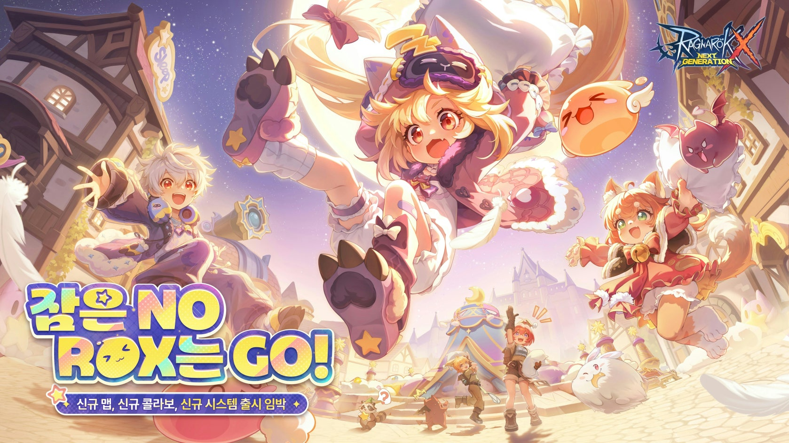
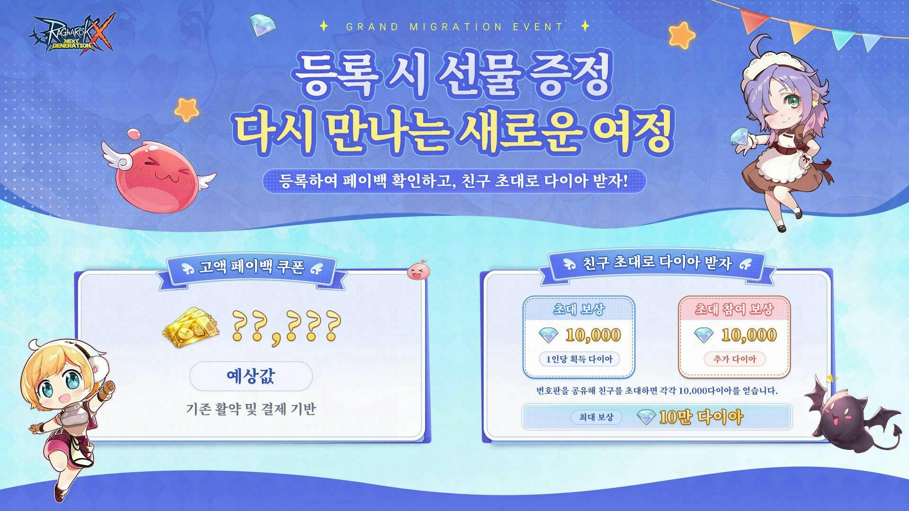

라그나로크X 신규 서버, 아시아·태평양 클라이언트 10월 15일 출시와 사전등록 방법
※ 해당 게임은 확률형 아이템을 포함하고 있습니다.
안녕하세요, 영원한도시입니다. 라그나로크X 신규 서버 'Kwave'가 열리는 날이 모레로 다가왔어요. 10월 15일(목)에 아시아·태평양 클라이언트가 한국에 정식 출시되는데, 여기로 쿠폰을 가져가려면 사전등록을 내일 10월 14일(수) 23:59까지 마쳐야 하거든요. 라그나로크X는 모바일 MMORPG고, 이번 아시아·태평양 클라이언트는 기존 한국 클라이언트와 별개로 나오는 새 클라이언트예요. 개인적으로는 결제 내역을 쿠폰으로 환산해 주는 구성이라 놓치면 아쉬운 소식이라고 봐요.
핵심은 세 줄이에요. 한국 클라이언트와 병행해서 즐길 수 있고, 캐릭터 데이터는 옮겨 갈 수 없고, 대신 결제·활약 내역이 쿠폰으로 환산돼 신규 서버로 따라옵니다. 하나씩 짚어 볼게요.

지금 보시는 키 비주얼에도 '신규 맵, 신규 콜라보, 신규 시스템 출시 임박'이라고 적혀 있어요
이미지 출처: 공식 라운지·GM 글라리스
1. 출시 일정, 10월 15일(목)과 데이터 이전 불가
아시아·태평양 클라이언트는 10월 15일(목) 한국에 정식 출시되고, 한국 클라이언트의 캐릭터 육성 데이터는 이쪽으로 옮길 수 없어요.
출시와 함께 동남아·홍콩·마카오·타이완 유저들과 한 무대를 쓰게 되고, 한국 클라이언트는 접속·플레이에 영향이 없어서 두 클라이언트를 동시에 켤 수 있어요. 진행도는 클라이언트마다 따로 쌓입니다.
이전이 안 되는 이유는 공식 설명이 이렇습니다. 서버 합병을 여러 번 했는데도 지역마다 업데이트 속도와 육성 수준이 크게 벌어져서, 억지로 합치면 오히려 불편해진다는 거예요. 데이터를 그대로 옮기면 적응이 어렵고 대회 성적에도 차이가 난다는 이유도 붙어 있고요. 그래서 데이터 대신 충전 내역과 활약 내역을 쿠폰으로 환산해 지급하는 쪽으로 방향을 잡았습니다.
공지에는 '캐릭터 데이터를 완전히 유지하면서'라는 표현이 나오는데, 이건 한국 클라이언트 캐릭터를 그대로 두고 두 클라이언트를 병행한다는 뜻이에요. 캐릭터가 신규 서버로 이사 가는 게 아니라서, '이전된다'로 읽기 쉬운데요, 그건 오해예요.
2. 사전등록 이벤트 참여법, 10월 14일(수) 23:59 마감
사전등록은 한국 클라이언트의 게임 내 이벤트 아이콘이나 공식 홈페이지 공지에서 들어갈 수 있고, 10월 14일(수) 23:59에 끝납니다.

보시면 왼쪽은 쿠폰 예상값, 오른쪽은 친구 초대 다이아 칸으로 나뉘어 있어요(물음표는 개인별로 다르게 뜨는 값이에요)
이미지 출처: 공식 이벤트 페이지(rox.gnjoy.com)
이벤트 이름은 「등록 시 선물 증정, 다시 만나는 새로운 여정」이고, 9월 22일(화) 12:00부터 열려 있어요. 참여 링크는 https://rox.gnjoy.com/PreRegister1015 입니다. 등록을 마치면 한국 계정의 과거 결제·활약 내역을 기준으로 10월 15일 Kwave에서 받을 쿠폰 수량을 미리 볼 수 있고, 기간 중에 활약하면 그 수량이 늘어요.
다만 페이지에 뜨는 숫자는 미리보기예요. 실제 수령량은 10월 14일 최종 데이터 기준으로 정해지니까, 마감 직전에 한 번 더 열어 보시는 게 안전하겠죠? 산정 기준은 아래처럼 잡혀 있습니다.
| 구분 | 집계 기준 | 환산 |
|---|---|---|
| 충전 | 한국 클라이언트 오픈 ~ 2026년 10월 14일 전체 충전액 | 1달러 = 1점 (상한 없음) |
| 활동 | 같은 기간 로그인 일수 | 1일 = 1점 (상한 1,000점) |
| 쿠폰 전환 | 충전 점수 + 활동 점수 | 1점 = 쿠폰 100개 |
| 제외 | 환불된 주문 | 집계 제외 |
눈여겨볼 건 활동 점수예요. 로그인한 날만큼 점수가 쌓이는 구조라서, 오래 접속해 온 분이라면 결제를 안 했어도 쿠폰이 나옵니다. 한국 클라이언트는 10월 8일부터 유료 결제 수단이 모두 닫혀서, 지금 수량을 늘릴 방법은 상한(1,000점) 전까지는 로그인 일수뿐이에요.
충전액은 1달러 = 1점 = 쿠폰 100개로 공식 환산돼 있지만, 쿠폰 한 개로 인게임에서 얼마어치를 살 수 있는지는 현재 확인된 공식 글 기준으로 안내가 없어요.
내 수량은 페이지에 뜨는 예상값으로 가늠하시면 되고, 실제 확인 기준은 출시 후 아시아·태평양 클라이언트 안의 「충전 없이! 복귀 시 쿠폰 증정」 이벤트 화면에 표시되는 보상 내용이라고 공식이 안내했어요.
친구 초대는 쿠폰과 별개의 보상이에요. 등록을 마치면 전용 번호판이 발급되고, 이걸 친구에게 공유하는 방식입니다. 초대받은 친구도 사전등록을 하고 번호판을 입력해야 초대가 성공으로 잡혀요. 공식 글에는 친구 1명 초대에 성공할 때마다 10,000 다이아, 최대 100,000 다이아까지라고 적혀 있고, 다이아는 쿠폰과 함께 Kwave 서버에서 지급돼요.
이벤트 이미지에는 '초대 보상 10,000'과 '초대 참여 보상 10,000(추가 다이아)' 두 칸이 있고, 번호판을 공유해 초대하면 각각 10,000 다이아를 얻는다는 문구도 붙어 있어서 초대한 쪽과 참여한 쪽 모두 받는 구조로 보입니다. 다만 참여한 쪽 보상이 최대 100,000 다이아 상한에 포함되는지는 공식 글에 따로 적혀 있지 않아요.
받는 순서는 출시 이후에 시작돼요.
- ① 10월 15일 출시 후, 한국 클라이언트에서 쓰던 그 로그인 계정으로 새 클라이언트에 접속
- ② Kwave 서버에 입장해 캐릭터 생성
- ③ 번호판 입력
- ④ 쿠폰 페이백과 친구 초대 다이아 수령
여기서 계정 연동만 조심하세요. 한국 클라이언트 계정이 Google·Facebook·Google Play 가운데 한 곳에는 연동돼 있어야 하고, 새 클라이언트에서도 그 계정 그대로 로그인해야 보상이 나옵니다. Apple 로그인은 지금 이 이벤트에서 쓸 수 없다고 하네요. Apple로만 연동해 두셨다면 게임 내 '설정 > 고객센터' 탭의 SNS 연동에서 Google이나 Facebook을 추가로 연동한 뒤, 그 계정으로 아시아·태평양 클라이언트에 로그인하세요.
지금 보시는 화면에서 Google이나 Facebook 연동 상태를 확인하면 됩니다
3. 10월 15일 신규 콘텐츠, 베인스 맵부터 마켓 바이백까지
10월 15일 신규 클라이언트에는 신규 170레벨 맵 '베인스'를 비롯해 대결 콘텐츠 확장, 직업 개편, 기념 이벤트가 들어오고, Q&A에는 '깜짝 콜라보 이벤트'도 예고돼 있어요. 공식 글에 나온 항목을 표로 모았어요.
| 구분 | 공식에 나온 내용 |
|---|---|
| 신규 맵 | 신규 170레벨 맵 '베인스' |
| 대결 콘텐츠 | '선택받은 자의 전투'ㆍ'MVP 헌트'ㆍ'정상 GVG 리그전' |
| 직업 개편 | '세이지'ㆍ'알케미스트' (개편 내용은 아직 안내 전) |
| 기념 이벤트 | 신규 코스튬을 무료로 받는 아시아·태평양 기념 이벤트 |
| 콜라보 | '깜짝 콜라보 이벤트' (상대는 Q&A에 적혀 있지 않음) |
| 무기 스킨·마켓 바이백 | 무기 스킨 시스템, 마켓 바이백 (세부 규칙은 아직 안내 전) |
9월 18일 예고 글에는 47일간 이어지는 축제 이벤트, 새로운 시즌 오픈, 새로운 정령 등장도 적혀 있었어요. 산리오캐릭터즈(Hello Kitty·Cinnamoroll) 콜라보는 10월 10일 공지에 따르면 10월 15일에 시작해 11월 14일까지 이어져요. 다만 Q&A에 나온 '깜짝 콜라보'와 같은 이벤트인지, 아시아·태평양 클라이언트에도 적용되는지는 공지에 명시가 없어서 확인 필요로 남겨 둘게요.
새로운 정령까지 포함해 상세는 아직 풀리지 않았고, 직업별 이야기는 세이지·알케미스트가 개편 대상이라는 데까지만 확인돼서 안내가 나온 뒤에 다시 정리할게요. 그 안내가 어서 나왔으면 하는 건 주인장도 마찬가지네요.
4. Kwave 서버 특징, 월드 레벨 160 시작과 경험치 2배
Kwave 서버는 월드 레벨 160에서 시작하고, 열리는 날부터 몇 달 동안 경험치가 2배로 들어옵니다. 성장 지원으로 대량의 오딘과 경험치 쿠폰도 지급돼요.
아시아·태평양 클라이언트에는 '디비전' 시스템이 있어서, 서버가 오픈 시점별 디비전으로 나뉘어요. MVP 헌트와 정상 GVG 리그전, 선택받은 자의 전투, KVM 같은 PVP까지 디비전마다 매칭 풀이 따로 돌아갑니다. Kwave는 독립 리전·디비전이라 거래소와 PVP, 대회 환경도 따로 굴러가고요. 기존 서버 환경과 섞이지 않는 새 판이라고 보시면 됩니다.
길드 단위 이벤트도 따로 열려요. 10월 12일 공지에 따르면 한국 서버 길드 지휘관이 신청해 아시아·태평양 서버에서 새 길드를 모으는 '길드 불씨 프로젝트'가 있고, 10명·20명 단계로 지휘관 쿠폰과 길드원 보상이 붙습니다. GVG 서포트와 KVM 추가 혜택도 같이 안내됐어요. 신청 마감이 10월 15일 11시(인게임 시간)라서, 길드장이시라면 공식 라운지 원문부터 확인해 두세요.
5. 한국 클라이언트 일정, 10월 14일 로그인 보상과 배포 중단
한국 클라이언트는 10월 14일까지 일일 로그인 보상이 이어지고, 신규 배포는 10월 8일부터 이미 멈춰 있습니다.
- 로그인 보상 : 9월 15일 ~ 10월 14일, 마지막 날에는 99만 수정과 전설 카드 선택 패키지 3장
- 주말 2X Up : 9월 15일 ~ 10월 15일 매주 일요일
- 배포 중단 : 10월 8일부터 App Store·Google Play·Galaxy Store·ONE store 게시 중단, 신규 설치 불가
- 결제 : 앱 안 결제도 홈페이지 상점도 닫혀서 유료 결제 수단은 전부 막힘
일일 보상 우편은 그날 00:00부터 23:59까지(UTC+9)만 받을 수 있고 놓치면 사라지니, 10월 14일 마지막 보상도 그날 안에 챙기셔야 해요. 기존 유저는 스토어 구매 기록에서 재설치할 수 있고 접속·플레이에도 영향이 없습니다. 서비스 종료는 공식 답변상 필요하면 사전 공지하고 환불 세부도 그때 안내한다는 입장이라, 종료가 확정된 건 아니에요.
아시아·태평양 클라이언트의 소식과 이벤트는 공식 라운지에 새로 열리는 전용 게시판에서 따로 안내돼요. 거기서 안내하는 이벤트와 콘텐츠는 한국 클라이언트에는 같이 적용되지 않습니다. 설치 방법과 스토어 안내는 아직 공식 공개가 없으니, 출시 당일 전용 게시판 공지부터 확인해 보세요.
사전등록 : https://rox.gnjoy.com/PreRegister1015 (10월 14일 23:59까지)
참고한 곳
· 라그나로크X: Next Generation 공식 라운지 「신규 아시아·태평양 클라이언트 출시 예고」
· 공식 라운지 「새로운 아시아·태평양 클라이언트 관련 Q&A」
· 공식 라운지 「등록 시 선물 증정, 다시 만나는 새로운 여정 이벤트 안내」
· 공식 라운지 「신규 서버 [Kwave] 길드 집결 이벤트」
· 공식 라운지 「한국 클라이언트 배포 중단 안내」
· 공식 라운지 「아시아·태평양 클라이언트 이벤트 및 콘텐츠 안내 계획」
· 공식 라운지 「아시아·태평양 서버 축제 이벤트 예고」
· 공식 라운지 「[콜라보] 라그나로크X : Next Generation X 산리오캐릭터즈」 (2026.10.13 기준)
▶ 같이 보면 좋은 글
· 라그나로크X 2주년 리제로 콜라보 이벤트 총정리
· 모바일MMORPG 라그나로크X 쿠폰 '1주년혜택대축제 5가지 이벤트 참여' 갤럭시스토어 코스튬 받는 법
본 포스팅은 해당 게임사로부터 소정의 고료를 지원받아 주관적으로 작성되었습니다.